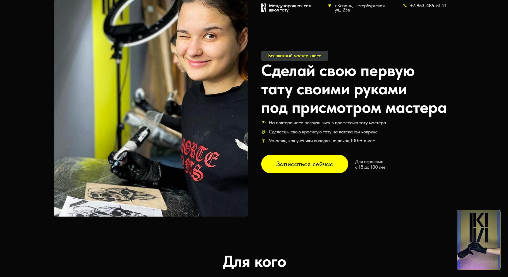
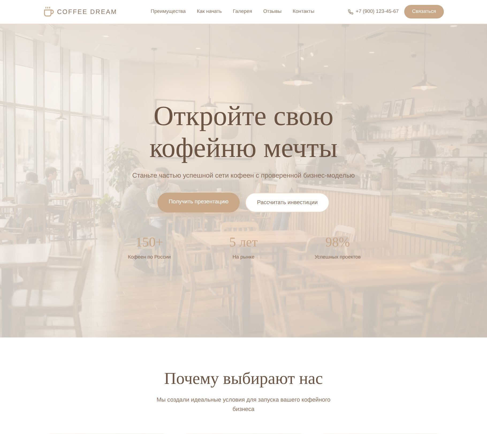
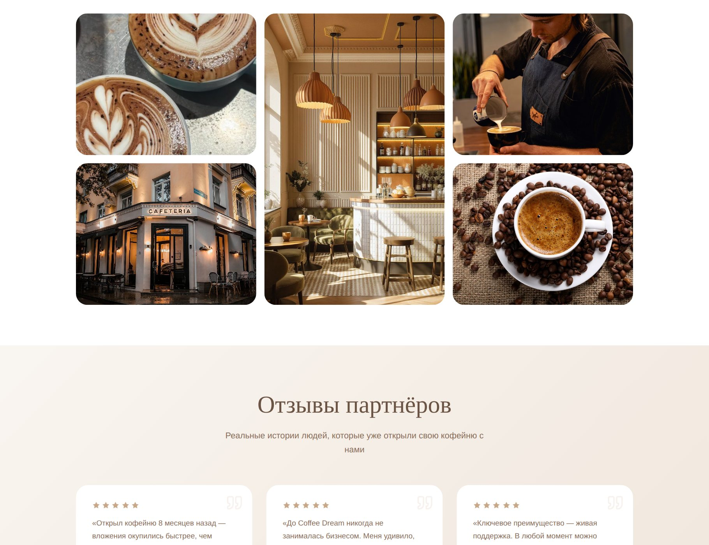
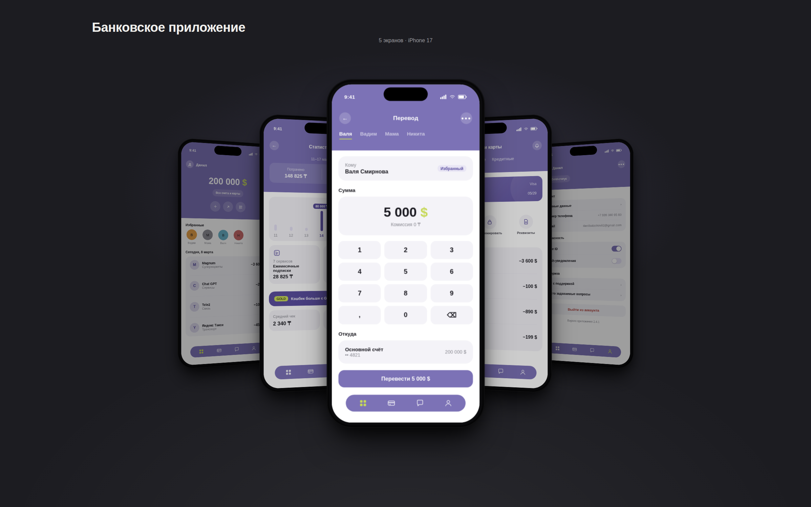
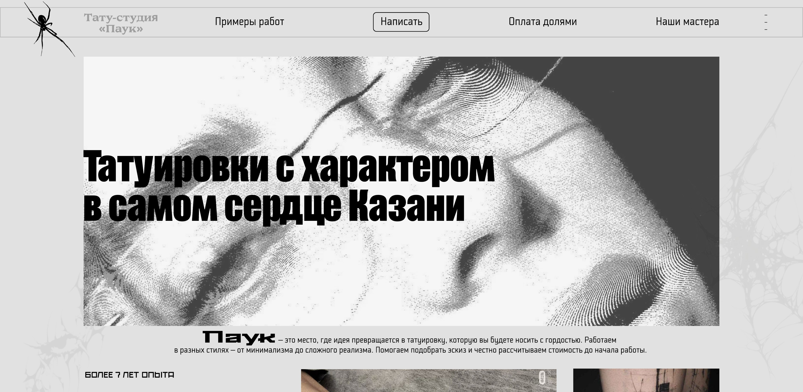
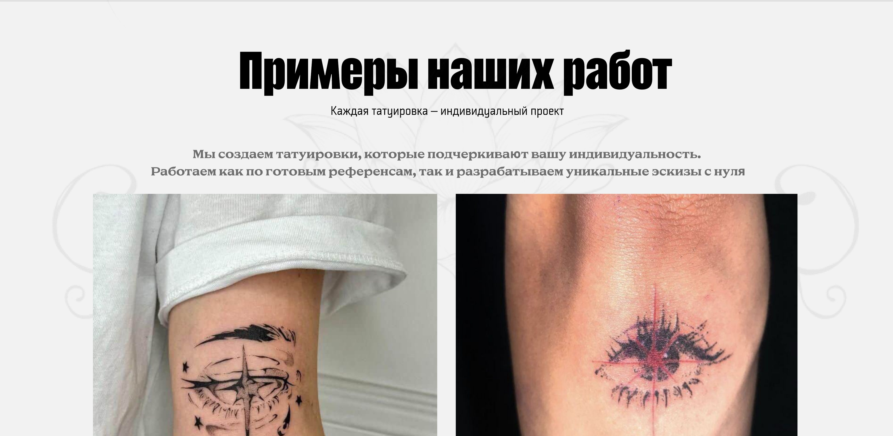
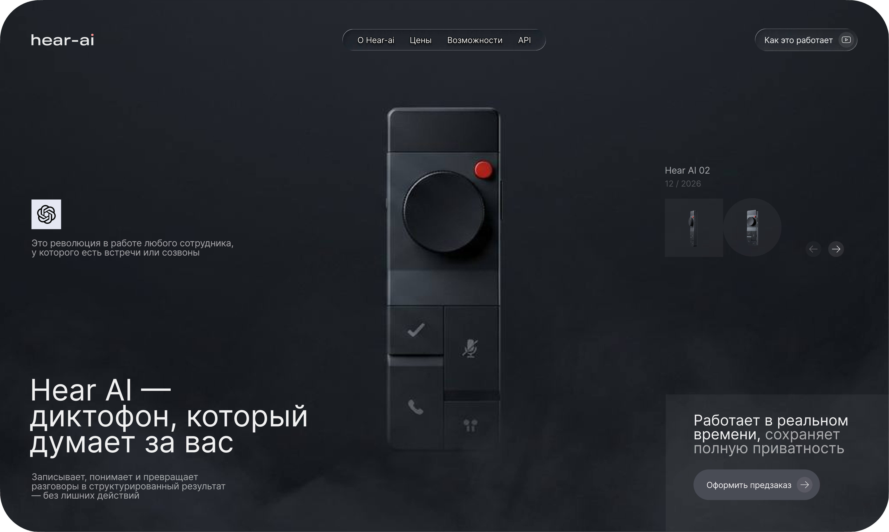

KIVI, школа татуировки
Задача
Сделать сайт школы татуировки с понятной структурой: познакомить с программой и перевести интерес в запись на бесплатный пробный урок.
Решение
Лендинг на Tilda с формой записи на пробный урок, блоками о программе и преподавателях, последовательным путём от первого экрана до заявки.
Результат
Сайт приводил заявки, записи и охват школе.

Coffee Dream
Задача
Реализовать классическую продающую структуру сайта: от первого экрана с обещанием до формы заявки, без потери внимания на пути между ними.
Решение
Тёплая кофейная палитра, пара шрифтов (Playfair Display + Inter), последовательные блоки — обещание, выгоды, процесс подключения, галерея, отзывы, заявка. Адаптивная вёрстка.
Результат
Завершённый сайт с цельным пользовательским путём от первого экрана до формы обратной связи.


Банковское приложение
Задача
Спроектировать основной пользовательский путь в банковском приложении: от баланса и статистики до быстрого перевода, карты и профиля. Убрать типичную перегруженность и сделать ключевые действия максимально понятными и быстрыми.
Решение
Проанализировал боли пользователей и спроектировал 5 экранов с единой визуальной системой. Главный экран построил вокруг баланса и быстрых действий, статистику — через крупные цифры и понятные категории, перевод вынес в короткий линейный флоу.
Результат
Готовый набор экранов с цельной навигацией и сниженной нагрузкой. Ключевые действия стали заметнее, интерфейс — чище и последовательнее.

Тату-студия «Паук»
Задача
Продающая структура сайта с акцентом на доверие и опыт студии, но с сочетанием экспериментального визуального языка и классической конверсионной логики.
Решение
Монохромная эстетика на основе тату-эскизов и рукописной айдентики поверх привычных блоков: мастера, гарантии, рассрочка, контакты и запись.
Результат
Завершённый лендинг студии с понятным путём от первого экрана до записи на консультацию.


Hear AI
Задача
Спроектировать лендинг для презентации AI-диктофона: устройства, которое записывает и структурирует разговоры, с акцентом на премиальный, технологичный образ продукта.
Решение
Тёмная сцена с крупным рендером устройства, приглушённый фон, минималистичная типографика и один явный призыв к действию — предзаказ.
Результат
Завершённый концепт-лендинг продукта, готовый к дальнейшей доработке под реальный запуск.

Балашов Данил Кириллович
Делаю сайты и презентации, которые работают на заявки, продажи и переговоры. Собрал лендинг, который приводил заявки и записи для школы, готовил материалы для продажи курса и для встреч с руководителями городской администрации Казани. Маркетинговое образование и опыт в таргетированной и контекстной рекламе помогают делать дизайн с учётом бизнес-задачи.
Опыт работы
- Создал и вёл сайт школы: лендинг на Tilda с формой записи на бесплатный пробный урок. Сайт приводил заявки, записи и охват.
- Сделал продающие презентации для пробных уроков. Они использовались на всём протяжении занятия, для прогрева аудитории и продажи курса.
- Разработал проект по улучшению городской инфраструктуры и лично представил его мэру Казани, главному архитектору и пресс-секретарю заместителя руководителя исполкома.
- Проект принят в работу: реализуется 5 предложенных идей, от менее затратных к более затратным.
- Подготовил презентации и материалы для переговоров с лицами, принимающими решения.
- Работал с руководителями отделов и структурных подразделений в жёстких сроках.
- Подбирал преподавателей для Алабуга Политех и сотрудников колледжа.
- Вместе с коллегами почти полностью укомплектовал штат на долгосрочную работу (около 50 сотрудников).
- Создал курс по игре на электрогитаре и барабанах, а также по сведению и мастерингу. Преподавал лично в Discord, обучил более 100 учеников.
- Развивал сообщество курса в Telegram-канале.
- Продвигал курс через таргетированную и контекстную рекламу с бюджетом менее 50 000 ₽ (около 265 000 ₸).
Навыки
Образование
КНИТУ, Институт управления инновациями (ИУИ) — высшее образование. Маркетинг, Издательское дело, Делопроизводство.
Языки
Русский: родной
Английский: B1
Казахский: изучаю
Контакты
+7 707 298 22 01 · danilbalashov82@gmail.com · Telegram, Instagram: @Slu1garden